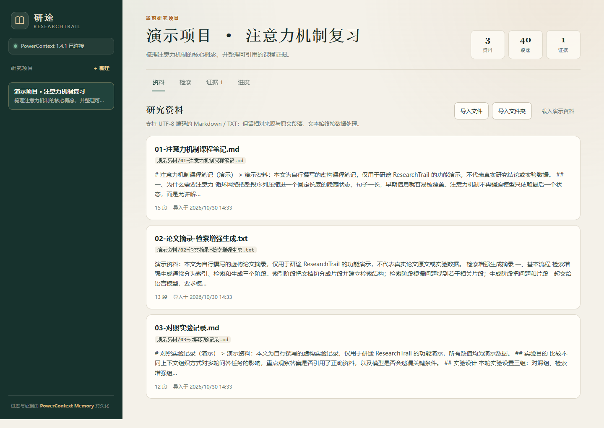
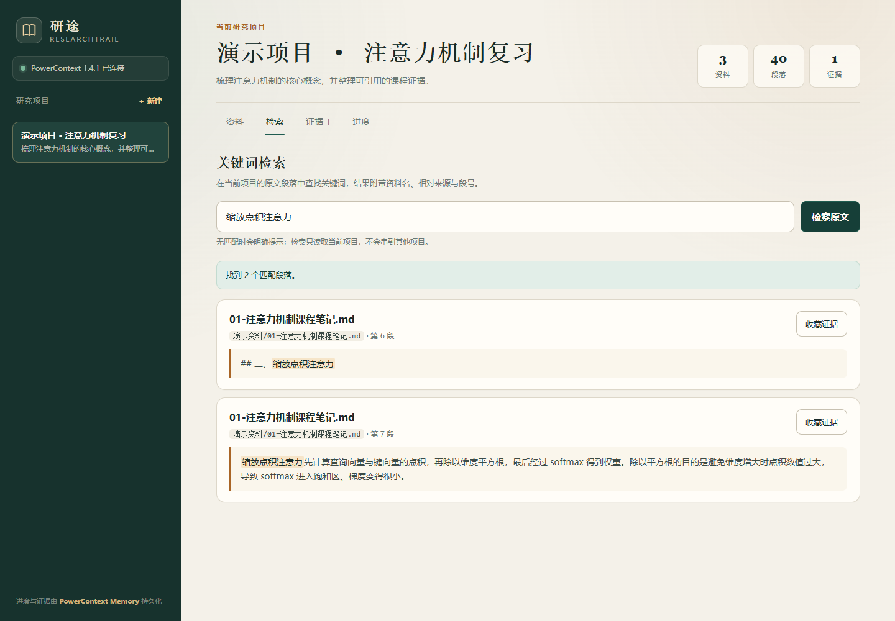
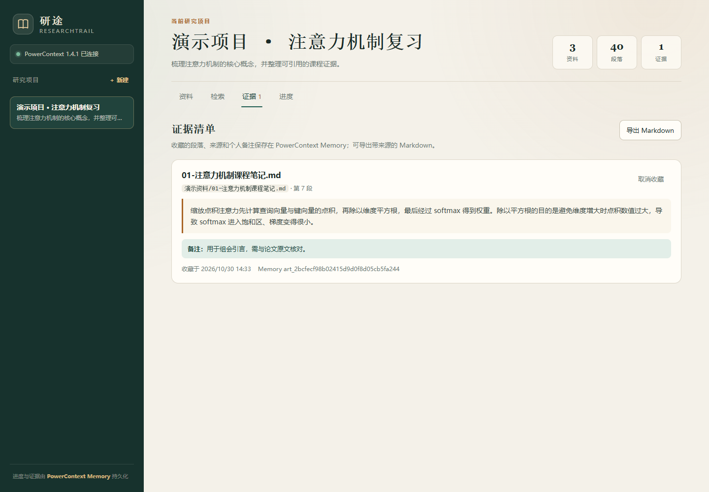
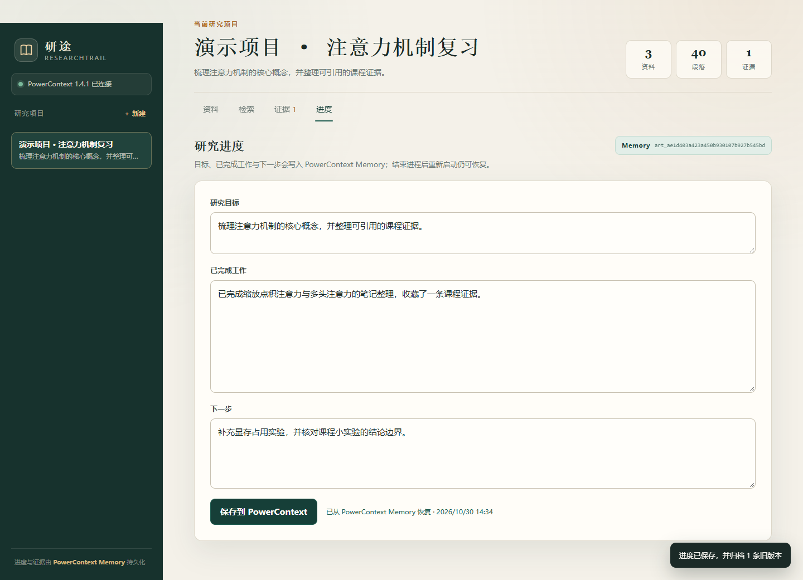
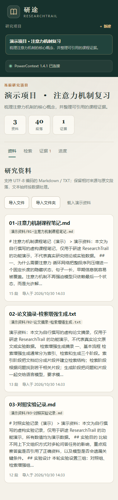
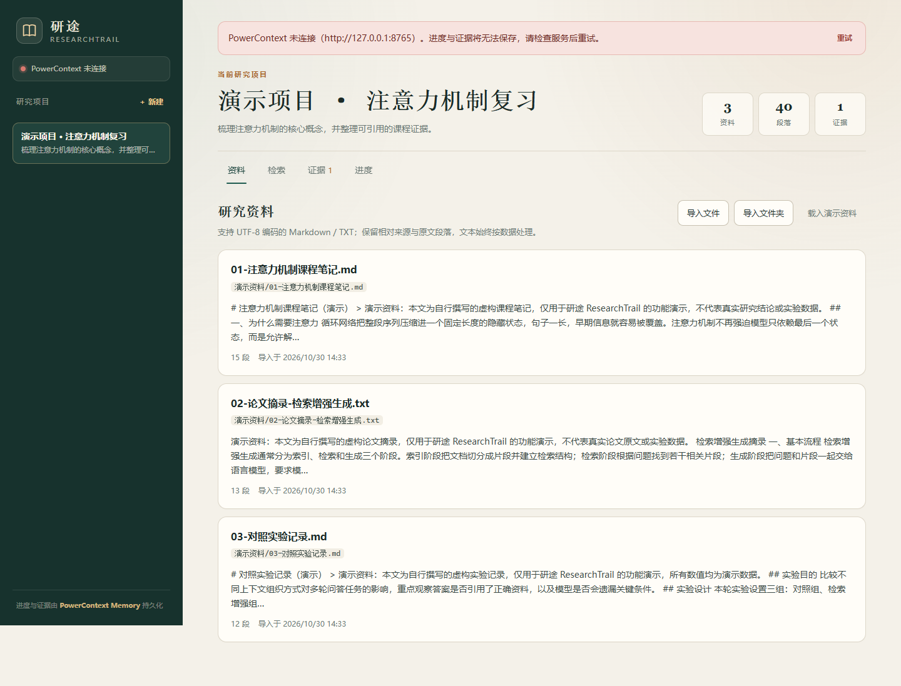

资料散落
课程笔记在文档里，论文摘录在 PDF 里，实验记录在另一个文件夹。想一起查，只能来回切换。
学习科研 · 资料证据工作台
课程笔记、论文摘录、实验记录导进同一个项目。按关键词找回原文段落，把关键证据和备注收进清单；研究目标与进度写入 PowerContext Memory，关掉进程也不会断档。

01 · 为什么做
真正的断点通常不在阅读，而在阅读之后：原文找不到、出处对不上、下次继续时想不起做到哪。
课程笔记在文档里，论文摘录在 PDF 里，实验记录在另一个文件夹。想一起查，只能来回切换。
只记得“看过一段相关论述”，却找不回文档名、相对路径和段号。汇报时不敢直接引用。
隔几天回来，要重新回忆读到哪里、收藏了什么、下一步原本打算做什么。
研途不替人读论文。它把“原文—来源—备注—进度”放在同一条可核对的工作流里。
02 · 一条完整工作流
四个动作，全部在本地完成。界面中的资料均为自行撰写的合成演示笔记。
每个项目是一个独立的 PowerContext Scope。资料、检索、证据和进度互不串线。
Markdown / TXT 解析为段落，保留文件名、相对来源和摘要；文件本身不落盘，正文按数据处理。
关键词命中原文段落，附带资料名、来源和段号；收藏时写下个人备注，原文与推断分开保存。
研究目标、已完成工作和下一步写入 PowerContext Memory；结束进程后重启，状态按项目恢复。



03 · 核心能力
项目列表只识别带 researchtrail.project=v1 标记的 Scope；另一个项目检索不到、也收藏不了本项目段落。
资料名、相对来源、段号与原文一起呈现。证据清单导出为 Markdown，汇报时可直接回到出处。
个人备注单独保存，不混进原文引用。避免把读者推断误写成论文结论。
重复导入按来源 + 内容哈希拦截；绝对路径、盘符、.. 与控制字符一律拒绝。
进度和证据通过 PowerContext Atomic Memory API 读写，不使用 JSON 文件模拟。旧进度通过 lifecycle 归档。
SQL 参数化、LIKE 转义、上传限额；前端不使用 innerHTML，并启用 CSP 与禁用缓存响应头。

窄屏也完整。 390px 宽度下实测无横向溢出，项目、统计、标签与资料卡片按单列重排。
04 · 技术分工
两部分各做擅长的事：资料检索要参数化与重复检测；项目边界、证据和进度要真正的上下文服务。
SQLite · 资料层
LIKE 检索并转义通配符PowerContext · 状态层
create_scope 建项目，外部引用标记归属remember_memory 写入 research.progress 与 research.evidencelist_memory_entries 只读取 active 记录change_atomic_memory_lifecycle 归档旧进度、取消收藏| 应用动作 | Memory 数据 / API |
|---|---|
| 新建项目 | create_scope · 外部标记 researchtrail.project=v1 |
| 保存进度 | remember_memory · kind research.progress |
| 收藏证据 | remember_memory · kind research.evidence |
| 恢复状态 | list_memory_entries · 仅 active，最新时间胜出 |
| 取消收藏 / 归档 | change_atomic_memory_lifecycle · state forgotten |
本版本只接入 PowerContext，未使用 seekdb。选择是把现有链路做完整，而不是为增加组件数量拆掉检索的确定性。
05 · 实测结果
2026-10-30 在本机独立数据目录、独立端口执行；PowerContext 与 Web 应用均真实启动，验收中途终止两个进程再重启。
演示资料/01-注意力机制课程笔记.md原始结果不是截图里的结论，而是脚本输出与两个服务的运行日志：
日志来自本地验证环境，不含真实用户数据，也未声明使用人数或提效比例。

06 · 验证样例
缩放点积注意力，应返回 2 个匹配段落。演示资料/01-注意力机制课程笔记.md。缩放点积注意力先计算查询向量与键向量的点积，再除以维度平方根，最后经过 softmax 得到权重。
07 · 复现
一条命令会同时拉起 PowerContext Server 与 Web 应用；首次运行会在 data/ 下创建独立数据目录。
git clone --branch 2026-competition-ecosystem `
https://github.com/Justin-Dong1/powercontext.git
cd powercontext\qoder
uv venv .venv --python 3.12
uv pip install --python .venv\Scripts\python.exe -r requirements.txt
Copy-Item .env.example .env
.\scripts\start.ps1打开 http://127.0.0.1:8000，按上一节的样例操作。按 Ctrl+C 会同时停止两个进程。
环境：Python 3.12.13 · PowerContext 1.4.1（PyPI）· FastAPI 0.162.0 · SQLite。Windows 10.0.26200 实跑；Linux/macOS 启动脚本已提供但未实测。
想自己跑验收：
.\.venv\Scripts\python.exe scripts\verify_acceptance.py脚本使用独立端口与数据目录，真实终止并重启两个进程；不会改动日常开发数据。
完整源码、运行说明与验收日志：github.com/Justin-Dong1/powercontext → qoder/ ↗
08 · 边界